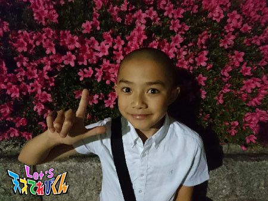

<<2016年5月 | トップページ | 2016年7月>>
2016年6月
大人になれば［林武尊］
こんにちは、林武尊です。
この前、久しぶりに朝ごはんをレストランで食べました！
大好きなパンケーキとキャラメルマキアート～
おいしかった～ 幸せ (o^^o)
では本題へ！
今回は「 大人になれば 」です！！
ぼくは、自由に何でも一人でできる大人になりたい！
まずは、一人旅にでてみたいです！
知らないところに一人でいって、
一人でいろんな体験をしたいです。
初めて泊まるところ、初めて食べるもの、
初めて着る服、いろんなお土産など、
そこの特徴的なものや独特なものを新発見！
旅であった知らない人たちとお友達になったり、
想像しただけでもワクワクする（≧∇≦）
他にも、大人になってやりたいことはたくさんあります。
一人で買い物をしたり
一人暮らしをして家を自由にリフォームしてみたり
と、いろいろ独立したことができる大人になりたいです！
それから、大人になったらお酒も飲んでみたい・・・
今の友達と一緒に飲んだり、自分がどれくらい強いのか試してみたい。
利き酒したり自分でお酒を作ったりするのも楽しそう。
でもたくさん飲みすぎて、酔っぱらわないようにしないと ＞_＜
みなさんはどんな大人になりたいですか？？？
投稿者:林武尊 | 投稿時間:18時54分 | カテゴリ：てれび戦士 | 固定リンク
大人になれば［皆川寧々］
みっなさ～ん、
こんばんは、＊寧々＊です (｡・u・｡)/☆
６月といえば、梅雨！！プール開き！！
も、そうですが、
そう！私の誕生日！！（ ←自分で言っちゃうww ）
今年で、12歳になりました！
少しずつ大人の階段をのぼっています・・・
やっぱり、『 大人 』ってかっこいいですよね～！！
そこで今日は、寧々の憧れる『 大人 』を
ランキング形式で、発表します @>\●v●｡)
☆ 第３位 ☆ 身長が高い大人！
やっぱり、身長が高いと、スタイルがよく見えるし、
いろんなファッションも楽しめると思うのです。
（ あっ。バスケも強そうww ）
そこがいいところなんです！
続いて、
☆ 第２位 ☆ クールな大人！
寧々は、かわいい ☆より、
みんなに憧れられる、かっこいい大人のほうが憧れます！
最後！
☆ 第１位 ☆ 変顔が得意な大人！
変顔で、世界を救えるわけじゃないんですけど。。。
周りの人を笑わせられる。
笑う＝幸せになれる力を持ってると思うんです (｡・Ｕ・｡)ｙ~
見た目とのギャップがある
ステキな大人にも憧れます！！
将来どんな大人になるのか自分でも楽しみですね！！
最後はジィジがお手伝いしてる
▽▽ マルシェ ▽▽に
遊びに行った写真で ☆☆☆

それでは！
＊寧々＊でした～
投稿者:皆川寧々 | 投稿時間:18時45分 | カテゴリ：てれび戦士 | 固定リンク
大人になれば［小澤竜心］
こんにちは！竜心です。
この前、秋田に行きました。
おじいちゃんと畑仕事をして、うれしかったです♪
ぼくのまわりには、
いろんなことを教えてくれる大人の人がたくさんいて、
みんな、やさしいです (*´∀｀)
お父さんは、
学校でのできごとや、習いごとの話を聞いてくれます！
そして、いつも面白いことをして、
笑わせてくれます。
でも、叱られるときは、ものすごく怖いです (((^^;)
筋肉のことをいろいろ教えてくれるのですが、
ぼくからみると、お父さんは、
ちょっとぽっちゃりしてきたので、やせてほしいです。
お母さんは、スポーツが得意です。
野球やバレーボールを教えてくれたりして、
よく遊んでくれます！
遊びながら動きのコツを教えてくれるので、
楽しくおぼえることができます。
でも、たまに鬼コーチのときがあります (((^^;)
秋田のおじいちゃんは、
野菜を育てるのが上手です ヽ(^○^)ノ
畑仕事のことをいろいろ教えてくれます。
この前は、枝豆の種を植えたり、
里芋の水やりをしたり・・・、
アスパラガスやエシャレットを収穫しました。
とってもおいしかったです♪
ぼくも大人になったら、子どもたちにやさしく、
いろんなことを教えてあげたいです！
そして、和服が似合うかっこいい大人になりたいなぁ。
投稿者:小澤竜心 | 投稿時間:18時45分 | カテゴリ：てれび戦士 | 固定リンク
大人になれば［黒川桃花］
こんにちは。食べるの大好き黒川桃花です。
この間、神奈川県の横須賀でご当地バーガーを食べました。
１個5000円以上もする特大サイズのハンバーガーがありましたが、
食べきれないのであきらめました (^_^;)
私は普通のサイズのバーガーを食べましたが、
肉汁ジュワーでおいしかったです！
さて今回のテーマは「 大人になれば 」です。
私のまわりには、素敵で尊敬している大人の人がたくさんいます！！
私は歌が好きで、
大人になってもずっとずっと歌い続けていたいと思っているので、
特に歌のうまい大人の人に憧れてしまいます。
もう ☆ キラッキラ ☆ なんです。
まぶしいです！！
あー私もあんな素敵な大人になりたい！と
目がハートになってしまいます！
そのために日々歌う筋肉をきたえています (^_^)
がんばるぞー！
投稿者:黒川桃花 | 投稿時間:18時45分 | カテゴリ：てれび戦士 | 固定リンク
大人になれば［原田明莉］
こんにちわ
明莉です！
まだ６月なのにもう暑くなってきたーーーッッッ
と思いつつ、朝は寒かったりーーッッッ
体調管理に十分気をつけなきゃな！
それでは本題に入ります
今回のテーマは
「 大人になれば 」
です！
面白いですねーーー笑笑笑
私が大人になるときは、やっぱり私が今思う理想の大人になりたいです！
私の今の理想の大人とは
子どものように好奇心旺盛（ こうきしんおうせい ）で、
元気で子どもの気持ちをよく理解してくれる大人です！
あと優しい！！！
大人になると責任が重いのか
よく怒るイメージがあったり
キャッキャキャッキャ遊ばないですよね・・・
そんなわけで、私の理想の大人は
責任感はしっかりもつけど
優しさ好奇心いっぱいの！
そして子どもの気持ちをよくわかってくれる！
大人です！
10年後にはこんな大人になれてるといーな！！
まぁまずはそんな大人になるために
今を精一杯頑張りたいと思います！
それでは
またね
投稿者:原田明莉 | 投稿時間:18時45分 | カテゴリ：てれび戦士 | 固定リンク
大人になれば［柿澤仁誠］
こんにちは！仁誠です (^○^)
今回のテーマは「 大人になれば 」
ぼくが大人になったら、、、
うーん！何にしようかなー？
そうだ！
漢字がすらすらかける
カッコいい大人になりたいです！！
でもぼくがそんな大人になれるかが、ビミョウです (￣―￣?)
なぜかというと、
少しでも漢字をおぼえられるようにどりょくしているのに、
次から次へとどんどん忘れてしまうんです ((T_T))
(；Д；) どうしたらいいのか、
だれか教えてください！！！！
年上のセンパイに聞いてみたら、
アドバイスがもらえました v(￣ー￣)v
それは漢字ノートに漢字を書くときに、
読みがなを１つ１つていねいに声に出してから書くことです！
あとは夜だけじゃなくて
朝、少しでも漢字練習をしておくと、
おぼえられるらしいんです！
この前の漢字テストでさっそくためしてみたら、
意外と漢字が書けたような気がしました (*^.^*)
４年生になって漢字もどんどんむずかしくなってるので、
これからも工夫してがんばります。
６年生の漢字なんて、そうぞうするのもおそろしいです ((T_T))
ではまた (@^^)/~~~
投稿者:柿澤仁誠 | 投稿時間:18時54分 | カテゴリ：てれび戦士 | 固定リンク
大人になれば［桐畑カレン］
こんにちは。
カレンです (*^^*)
先日、鎌倉に行ってきました♪
お金を洗うとお金が増えるという神社に行って、
☆ おこづかいア～ップ ☆
☆ いろいろなごえん（ 出会い ）が増えますように ☆
と、願いをこめて505円洗ってきました (^^)
まだまだ行ってみたい神社やお寺がたくさん。
またゆっくりと鎌倉めぐりをしてみたいです。
そうそう！
鎌倉で神社めぐりをしていたとき、神社で結婚式をあげているかたがいました。
白無垢（ しろむく ）を着た花嫁さんが
とってもとってもきれいで、私の目はハート。
演奏されている雅楽（ ががく）も素敵。
はあ、うっとり (//∇//)
思わずお母さんに、
「 ママ、私もああいうお着物を着て、結婚式をするよー (*´∀｀) 」
と宣言しました。
だ・け・ど
私には、おばあちゃんのおうちで見せてもらった、
お母さんが着たウエディングドレスを結婚式で着るんだ～という夢もありました。
うーん・・・どうしよう・・・どうしよう (。>д<)
なやんでいたら、
「 もう少しあとでなやんでもいいんじゃない (^_^;)？ 」
と言わました。
そ、そうですね (^o^;)
「 大人になれば 」白無垢を着るのか、
お母さんのウエディングドレスを着るのか、いえいえ両方着ますよ！なのか。
どうしようかな (／▽＼)♪
投稿者:桐畑カレン | 投稿時間:18時45分 | カテゴリ：てれび戦士 | 固定リンク
大人になれば［久保みのり］
みなさん、こんにちは (^O^)／
みのりです！！
こないだ習っているピアノの発表会がありました。
少し長い曲なので練習ではなかなかノーミスでひくことができなかったけれど、
本番ではカンペキなえんそう♪（ ←自分で言っちゃった笑 ）
まちがえないようにひくだけじゃなくて、
強弱をつけたり気持ちをこめてひけたので、
先生や家族にほめてもらえてうれしかったです♪( ´▽｀)
さてさて。今回のテーマは、
「 大人になれば 」
大人になったら、、、
（１）車を運転したい！
運転できたら１人でも遠くに遊びに行けるし、
雨でも暑くても寒くてもへっちゃら～。
今はパパやママ、おじいちゃんおばあちゃんに乗せてもらっているから
わたしがめんきょを取ったら、みんなをドライブに連れていってあげよう ^ ^
（２）ビールを飲みたい！
一口飲んで「 あ～～っっ！ 」と気持ちよく言ってみたいです。
今はビールのにおいはちょっとくさく感じるけど
大人はみんなおいしそうに飲んでいるから。
お店にごはんを食べに行ったときに
「 とりあえず生 」って言ってみたいな～ ^ ^
（３）おけしょうをしてみたい！
小さいときにこっそりママの口べにをべったりぬって、
ばくしょうされたことがあります。
急に大きな声でわらわれたからビックリして泣いちゃったって。
覚えてないけど。。。
写真がのこっています (￣◇￣;)
デパートのおけしょう品売り場について行くと
お姉さんのにおいがします ^ ^
わたしもいすに座らせてもらって選びたいなぁ～^ ^
＊.｡.:*・ﾟ ＊.｡.:*・ﾟ ＊.｡.:*・ﾟ ＊.｡.:*・ﾟ ＊.｡.
そんなステキな大人になるために、
強くてやさしい女の子でいたいな。
気合をいれてがんばるぞ！！
投稿者:久保みのり | 投稿時間:18時45分 | カテゴリ：てれび戦士 | 固定リンク
大人になれば［飯島緋梨］
こんにちは
飯島緋梨です！
少し前、学校で
【 大人になったらどんな大人になりたいか 】
という授業がありました！
緋梨が大人になったら・・・
どんな感じだろう笑
自分でも想像がつかないけど、
どんな仕事してるかな？
毎日楽しそう *\(^o^)/*
というわけで！
今回のお題は
「 大人になれば 」
私が大人になってしてみたい２つのこと！
１つ目は、大人になったら車の免許をとって
いろいろな所にドライブに行きたいです！！
どこに行こうかな？
未来の車は空も飛べるかな？
宇宙まで行けたりして (^^)
ガソリンも使わないで地球に優しい車で
フワフワしててぶつかっても誰もケガしない車とか？
考えるだけでもワクワクします笑
２つ目は大人になったら
同窓会がしてみたいです！
緋梨はこの前、小学校の卒業式がありました！
そのときに中学校が別々になってしまうお友達に
同窓会で会おうねと約束しました！
大人になったとき、みんな何してるだろう！
楽しみすぎる (^o^)
そして卒業式から数ヶ月しか経ってないけど・・・
もう会いたくなってます笑
次に会うのが楽しみ♪
モチロン大人になったら天てれの同窓会も超楽しみ！(^o^)

Let's 大人になれば！
投稿者:飯島緋梨 | 投稿時間:18時45分 | カテゴリ：てれび戦士 | 固定リンク
大人になれば［稲垣芽生］
こんにちは～♪
最近私は、ピーチパインを食べましたっ！
なんかすごい、いでたちがオシャレでびっくりしました。
ピーチパインっていうのは
沖縄特産のパイナップルなんだって！
知らなかった♪
ちょっと、小さくてかわいいパイン！！
あんまぁ～い～！
パイナップルなのにピーチのにおいがするから
ピーチパインなんだって！！
世界にはまだまだ食べたことないものいっぱいだから
食べるのが楽しみだなぁ～
みんな違ってみんなおいしいー
ごちそうさまでした。
今回のテーマ「 大人になれば 」・・・
私の理想の大人は・・・
いつも楽しそうで、優しくて、みんなを笑わせられる大人です。
そして何かあったときに助けてあげられる人です。
まだ子どもで、できないことがたくさんで
おかあさんやおとうさんの力になりたいけど
いまは、お風呂洗い洗濯物たたみ
お布団しいたりそれぐらい。
妹とももっと仲良くしないとね！
理想の大人になれません・・・(*ﾉωﾉ)
前髪をたらした髪型も
してみたいな～♪”(-“”-)”
投稿者:稲垣芽生 | 投稿時間:18時45分 | カテゴリ：てれび戦士 | 固定リンク
大人になれば［瀧澤翼］
こんにちは～！
最近、テストに向けて勉強を頑張ってる瀧澤翼です。
今回のテーマは「 大人になれば 」かぁ～。
僕はまだ13歳なので、成人式まであと７年もあります。
ですが、20歳になったらお父さんや同級生たちと
お酒を片手にこれからの人生を語ることに憧れています。
中学校や高校の同窓会にも参加してみたいなぁ！
その他にも車の運転免許を取って
車で海などにドライブに行ったりしてみたいです。
そして、僕が大人になったら１番したいことは
１人で海外旅行に行くこと！！
なぜなら日本だけではなく、
海外の文化や観光地、ファッションなどを自分の目で見て感じたいからです。
そして色んな国の人と友達になって、
いつか日本を案内して日本の文化などをもっともっと世界に広げたいです！
僕の夢が、海外でも活躍できる俳優なので、
日本の文化を広めつつ、芸能活動も頑張りたいです！
大人になったら絶対かなえるぞ！
Let's 大人！！
投稿者:瀧澤翼 | 投稿時間:18時54分 | カテゴリ：てれび戦士 | 固定リンク
大人になれば［胡内奏芽］
こんにちは！！！
胡内です。
さっそくですが、
見てください(*^^*)！
ぼく、超蝶野ロボと金魚R作ってみました。
まだまだ細かいところとかちゃんとできてないけど、
作るのが楽しくて、終わるまであっという間でした。
また、いろいろ作りたいです。
今回のテーマは、「 大人になれば 」です。
ぼくは、ずっと小さいときから、
お父さんみたいな大人になりたいと思っています。
お父さんは、僕たちのために、一生けん命働いてくれて、
困ったときは助けてくれて、ダメなことはちゃんとしかってくれて、
でも優しくて、何でもできます。
ちなみに、髪型もお父さんと一緒に美容院へ行き、
この髪型でお願いします！と、お父さんの髪型を見せて美容師さんにやってもらいました。
だから、この髪型がすごく大好きです！！！
大人になれば、お父さんみたいになれるかな？ (^-^)
投稿者:胡内奏芽 | 投稿時間:18時45分 | カテゴリ：てれび戦士 | 固定リンク
初めて○○しました！［黒川桃花］
こんにちは！黒川桃花です！
この前、つじ君とニマ君とイベントに行ってきました。
楽しかったです (^_^)/
さて、今回のテーマは、
「 初めて○○しました！ 」です。
私が初めてしたことは、トランポリンです！
とっても楽しいですよー！
開脚ジャンプしてみたり、回転してみたり、前に倒れたり、などなど・・・
いろんな技があるんですよ！
ちなみに私は、開脚ジャンプと、回転が好きです！
ジャンプし終わって、普通の床の上を歩くと、変な感じがするんですよ！
あれ？はねないぞ？って感じで
ジャンプしたあとは、ふわふわしてます！
そして、夢の
ダンクシューーーート！！！！
とーーっても気分爽快！
バスケットボールの選手になったみたいでした。
トランポリンだからこそ、できることですね！
投稿者:黒川桃花 | 投稿時間:18時45分 | カテゴリ：てれび戦士 | 固定リンク
初めて○○しました！［原田明莉］
こーんにっちわっ
明莉です！
部活が正式にはじまったーーー
仮入部のときとは違って
朝は早いし
メニューはつらいときもあるし
帰るのは遅いし
思ったより大変です！
けど楽しいのでがんばれます！
これからもがんばらなきゃですね！
それでは本題に入ります
今回のテーマは
「 初めて○○しました！ 」
です！
だいたいのmission（ ミッション ）は毎回が初めてです！
けど今回はそれ以外で、いちばん最近の初めてをお話ししたいと思います
私はこの間
初めて劇場でミュージカルをみてきました！
演劇教室という行事があって
１年生みんなでいきました！
ほんっっっとに美しいものでした！
ダンスとか歌のハモリとか、めっちゃめちゃそろってて・・・
もぅ
ミュージカルの一体感ってすごいですよね！！！
あのきれいな声といい
感動させる演技といい
いろいろなものに癒されました \(//∇//)\
あれがたくさんの努力を積んできた証（ あかし ）なんだなと思い、
私もこれからも努力を怠らずがんばりたいと思いました！！！
ということで私の初めて〇〇しましたは
「 ミュージカル 」をみてきました！
でした！
歌ってる感じ (^○^) 笑笑
投稿者:原田明莉 | 投稿時間:18時45分 | カテゴリ：てれび戦士 | 固定リンク
初めて○○しました！［辻晴仁］
おはこんばんちは (^^)/
つじはるとです。
てれび戦士になって、超次元帝国清掃課と戦ったり、
タグラグビーをしたり、
学校の運動会では、あこがれの“ ロックソーラン節 ”をおどったり。
最近のぼくは、初めての体験をたくさんしています。
そして今回のテーマは、「 初めて○○しました！ 」
なにを書こうか迷ったのだけど・・・
よし！今からひとつ、新しい経験をしてみよう！
と思いつきました！！
なにを経験しようと考えたかと言うと・・・
じつはぼくは、新しい食べものを食べるとき、
すごーーくしんちょうになるタイプなんです。
そんなぼくが、ずっとおそれていて、
１度も食べられないでいるものがあります。
なめることも、
ほんのちょっとだけかじるってこともできていないほどです。
でも、においをかぐと、その味はだいたい想像がつきます。
それは、、、なにかというと、、、、、
ジャーン！！「 うめぼし 」ですっ！！！
はい、今回ぼくは、
「 初めてうめぼしを食べました！ 」(*^▽^*)
うめぼしを食べる前に、、
やはりまずはにおいをかいでみました。
ぎょえっ！すっごいすっぱいにおい！！
ありえないありえない！！
このうめぼしちょっと大きくない？
うーー、やっぱりむりかも～～～
いやいやいやいや、でも、、がんばるぞお！！
えい！！ガブリッッ！！！
もぐもぐもぐ・・・・・・ ん？？？
キエーーーーーーーーーッ！！！ギャフン ((+_+))
ごはんごはんごはんごはん！！！！！
いやあ～～すごかった。
涙が出ちゃったよ、、、
おおげさだと思う？
本気の本気、おおまじめです！
初めてのうめぼしは、ちょっと信じられないすっぱからイタイ味でした。
でも、うめぼしを食べたあとのごはんは、あまくておいしかったです (^^♪
なのでまた食べたいです！
・・・・・・・・・なあんてうそです。
もうしばらくはいいかな (>_<)
あーーつかれた、、、
では、またね (^^)/
投稿者:辻晴仁 | 投稿時間:18時45分 | カテゴリ：てれび戦士 | 固定リンク
初めて○○しました！［桐畑カレン］
こんにちは。
カレンです (*^^*)
お散歩してる途中でやっていたマルシェ。
そこで「 ねんどアロマせっけん 」作りを体験してきました。
ねんどのようなせっけんをコネコネ。
好きなアロマオイルを入れて
ハートの型ぬきをして

じゃん！
お花のせっけんができました (*^▽^)♪
☆。.:＊・゜☆。.:＊・゜☆。.:＊・゜
茶色くて見た目かたそうな食べもの。
去年の冬、お友達の家族とお食事に行ったときに出会ったものです。
「 なんだろう、これ・・・ 」
と思って食べずにいたら、
「 おいしいから食べて食べて！！ 」
と、お友達にすすめられました。
実は・・・飲みこむタイミングが分からなそうな食べものって
ちょっと苦手なんです。
でもお友達がすすめてくれるから、
「 えいっ(>_<) 」
一口パクっと食べてみました。
モグモグ
モグモグ
モグモグ
あ、やっぱり飲みこめない・・・
でもなんかコリコリしてて
ちょっとしょっぱくて
おいしいかも～《*≧∀≦》
これ、なんだか分かりますか？
答えは
すなぎも
です！
『 初めてすなぎもを食べました！ 』
すなぎもって、こんなにおいしいんだってびっくりしました！！(゜ロ゜ノ)ノ
好きになった食べものは、しばらく食べ続けたいというクセをもっている私。
いろいろ食べ比べてみて、
近所の商店街にある焼き鳥屋さんの「 すなぎも 」が
一番好きな味だと分かりました。
ブームは落ち着いたけど、
お母さんのお買いものについていった日は、買ってもらいます♪
やっぱりおいしい(≧▽≦)
初めてすることはドキドキすると思うけど
☆ Let's try ☆
新しい発見があるかもしれません (*^-^*)
投稿者:桐畑カレン | 投稿時間:18時54分 | カテゴリ：てれび戦士 | 固定リンク
初めて○○しました！［柿澤仁誠］
こんには！
柿澤仁誠です！！
天気が晴れの日はソフトクリームやかき氷など、
冷たいものが食べたくなるぐらい
暑くなってきましたね！！
ぼくは、この前の休みの日に水族館に行ってきました。
そこに魚とふれ合えるコーナーがあり、
ぼくは初めてニジマスとコイにエサをあげることになりました！
エサを近づけると！！！！！
いっせいに魚がもうスピードで、
ぼくの手のところに来てこわくなりました (゜O゜;
友だちが「 この魚は歯がないから大丈夫だよ 」
と教えてくれたので、
エサを持って水の中に入れてみると、
魚がぼくの手にすいついて、ちゅぱちゅぱという音がして、
いっしゅんで、魚にエサを食べられてしまいました。
いっしょうけんめい集まってエサを食べる魚たちがかわいくて、
またエサをあげに来ようと思いました！！
これがぼくの初めての魚のエサやりでした！
ではまたーー ＼(^o^)／
投稿者:柿澤仁誠 | 投稿時間:18時45分 | カテゴリ：てれび戦士 | 固定リンク
初めて○○しました！［林武尊］
こんにちは！
林武尊です！
今回は「 初めて○○しました！ 」です！！
僕の“ 初めて ”は体育祭の応援団に入ったことです！
初めてのことでいろいろ不安ですが、がんばっています！
“ フレフレコール ”は、腕の動かしかたと角度が難しくて、
他の人をチラ見しながらなんとかついていけています。f^_^;
その他にも“ 押せ行けコール ”や“ 三三七拍子（ さんさんななびょうし ）”などをやります。
三三七拍子は難しい (´Д｀)ﾊｧ…ー
応援団として、紅組（ 僕は紅組 ）のみんなをまとめられたらいいんだけど
なかなか上手くいきません (ー_ー;)
でも本番は上手くいきますように (ー人ー)
僕のもうひとつの“ 初めて ”は、前もブログに書いたけど
おばあちゃんのところに、新幹線に乗って一人で行ったことです！
僕にとってはすごいことなので、もう一回紹介しました！
新幹線では寝てしまうと寝過ごしそうだったので、
緊張してずっと起きてました。
だからおばあちゃんの家に着いたらホッとして、
すぐに寝てしまいました (( _ _ ))..zzzZZ
これからもたくさんの“ 初めて ”に
どんどん挑戦していきたいと思います！
投稿者:林武尊 | 投稿時間:18時45分 | カテゴリ：てれび戦士 | 固定リンク
初めて○○しました！［稲垣芽生］
こんにちは～
毎年恒例、この時期になるとたくさんやるBBQをしました。
川の近くだったので
お魚さんを網でとったりもしました。
友達と合わせて10匹くらいとれてうれしかったけど
小さかったので川に返してあげました。
またあえるかなっ？
BBQはみんなが笑顔で大好き。
楽しかったなぁ～
本日のテーマ！
【 初めて○○しました！ 】です！
実は、私なんと！
ウィンナーを今回いちから作りました。
お肉に、セージや好みのスパイスを入れて混ぜ混ぜ。
力の加減が大変だったけど
がんばって作りました！
あとは洗った腸に詰め詰めです。
切れないように慎重に・・・
最後は結べば完成！！
やっぱり手作りはおいしい！！
みなさんも召し上がれ～
( *´艸｀)
これからもたくさんのことに挑戦して
成長したいです。
９歳、まだまだです。
もっと頼りにしてもらえるほど
がんばらなくっちゃ・・・
ではまたねん～♪
投稿者:稲垣芽生 | 投稿時間:18時45分 | カテゴリ：てれび戦士 | 固定リンク
初めて○○しました！［小澤竜心］
こんにちは！竜心です。
５月は、さつきや、つつじの花が、
たくさん咲いていました。

道を歩いているだけでも、
満開のお花を見つけることができて、
ぽかぽかあったかくて、気持ち良いです♪

ぼくの、「 初めて○○しました！ 」は、
『 初めて一人で電車に乗った！ 』ときのことです。
実はぼく、電車に、小さなトラウマがあります。
３年生のとき、ぼくは初めて一人で電車に乗って、
目的地の駅でお母さんと待ち合わせをしたんです。
でも、電車に乗ってすぐ、寝てしまいました。。。
そしたら、おりる駅を乗り過ごして、
隣の県の方まで行ってしまったのです ヘ(゜ο°;)ノ
目が覚めて、見たこともない駅でおりて、
携帯を見たら、
お父さんとお母さんから、
すごい量のメールと電話がきていました！
お母さんに電話して、駅員さんに戻りかたを聞いて、
ホームまで連れてってもらって・・・ f(^_^;)
・・・・・・すごくあせりました。
お母さんは、ものすごく心配していました。
お父さんには、「 いい経験だ！ 」と、
はげまされました・・・ (((^_^;)
冒険みたいな一人旅になってしまったのです。。。
今でも、一人で電車に乗るのは、
ちょっと怖いかな～(>_<)
投稿者:小澤竜心 | 投稿時間:18時45分 | カテゴリ：てれび戦士 | 固定リンク
初めて○○しました！［胡内奏芽］
こんにちは！
胡内です
先日、ねんがんの海に行ってきました！

まだ、寒くて水には入れなかったけど、
砂浜を走ったり、砂に絵を描いたりして、
とっても楽しかったです。
さて、今回のテーマは＜ 初めて○○しました！ ＞です！！
ぼくは、４年生になって、
生まれて初めて、母の日にカーネーションを贈りました。
自分のおこづかいで買ったので、
すごく喜んでもらえて、うれしかったです。
メッセージカードも書いてみました！
カードはまちがえて、たん生日カードにしてしまいましたが、
「 それも良い思い出よ！ 」と言ってくれてホッとしました (^o^)
これからは、毎年忘れずに贈りたいです！！！
以上、胡内でした。
投稿者:胡内奏芽 | 投稿時間:18時54分 | カテゴリ：てれび戦士 | 固定リンク
初めて○○しました！［飯島緋梨］
こんにちは！
飯島緋梨です
今回のお題は・・・
「 初めて〇〇しました！ 」
中学校生活にも慣れてきて、
楽しい～！！
と思っていたのもつかの間・・・
初めての中間テストがありました
「 中間テストと私 」
中間テスト２週間前・・・
あ！もうすぐ初の中間テストか～
どんな感じだろう♪ ワクワク！
まだテスト勉強しなくても平気だよね～！
中間テスト１週間前・・・
勉強しなきゃ・・・
でも眠い・・・（ ばたっzzzz ）
中間テスト３日前・・・
え？！もう３日前？！
ええぇ～！！
がんばろうかな～
大丈夫かな～
まっ！何とかなるか (^^)
中間テスト当日
もう終わり！
最後の問題までできない (>_<)
時間が足りない
テストって・・・ギャー！
ってなわけで・・・
返却されたテストの結果
数学、おぉー！
国語、おおぉー！
英語、おおおぉー！
理科・・・え？
社会・・・なんで (>_<)
社会がダメダメでした！
あらら～ (￣▽￣)
初めての中間テストなのに
何とかなるさと油断してしまった (>_<)
この反省をふまえて
次の期末テストではシッカリ勉強しなくっちゃ (^^)
今からがんばります。
でもその前におかし食べようかな～！！
いや、ダメだダメだ (笑)

Let's テスト勉強！
投稿者:飯島緋梨 | 投稿時間:18時45分 | カテゴリ：てれび戦士 | 固定リンク
ページの一番上へ▲